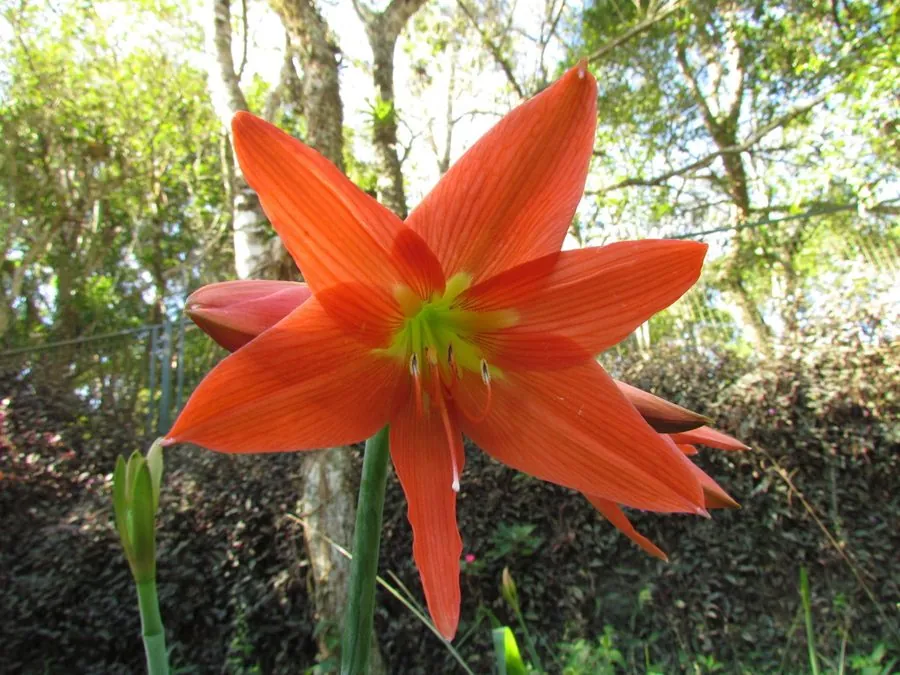

花卉与草本 · 植物界
朱顶红 Hippeastrum rutilum

石蒜科多年生球根花卉，花大如喇叭、色彩艳丽，一葶可开数朵，是春季与年宵花市常见的盆栽花卉，原产南美。
- 分类
- 门被子植物门纲木兰纲目天门冬目科石蒜科属朱顶红属
- 栖息环境
- 南美巴西的林缘与草地，喜温暖、阳光充足
- 地理分布
- 原产南美洲，现世界各地广泛盆栽，中国各地常见
- 保护级别
- 暂无评估
物种志
朱顶红为石蒜科朱顶红属多年生球根草本，株高 30–60 厘米，地下具球形鳞茎。叶片带状，基生，与花葶同时或稍后抽出。花葶粗壮中空，顶端着花 2–6 朵，花大，喇叭形，直径 10–15 厘米，花色有红、粉、白、橙及条纹，花期 4–6 月；果实为蒴果。
朱顶红原产南美洲巴西一带，喜温暖、阳光充足和湿润的环境，不耐寒，冬季需保持 10℃ 以上。它花大色艳、栽培简单，盆栽时鳞茎半埋即可，是春季和年宵花市常见的球根花卉；近年来进口的重瓣、绿色、条纹品种也越来越多。栽培以分球繁殖为主，也可播种；花后剪去残花、保留叶片养球，翌年才能再次开花。
形态与习性
- 株高30–60 厘米，具球形鳞茎
- 花期4–6 月，一葶可开 2–6 朵
- 果期花后结蒴果
- 光照喜充足阳光，夏季适度遮阴
- 水分喜湿润，忌积水烂球
- 土壤疏松肥沃、排水良好的沙壤土
- 繁殖以分球为主，也可播种
- 主要用途盆栽观赏、年宵花、切花
趣味知识
- 朱顶红的花大如喇叭，一葶可开 2–6 朵，花色鲜艳。
- 它原产南美，盆栽时鳞茎半埋土中，浇水不可没过球顶。
- 花后剪去残花、保留叶片养球，是翌年再次开花的关键。
- 近年来进口的重瓣、绿色和条纹朱顶红品种越来越受欢迎。